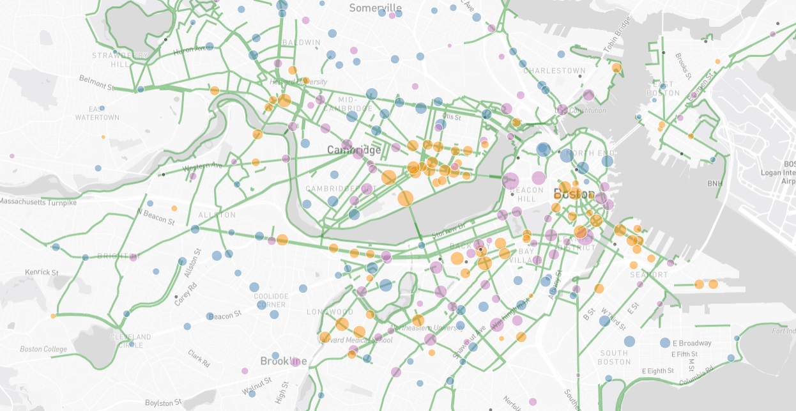

01 / Context
Replace with your section title.
Each step has a matching visualization on the left. As the reader scrolls down, the left panel transitions to the next chart while this column continues flowing.
Write 2–4 short paragraphs per step. Keep each beat focused on a single insight so the reader knows exactly what to look for.
This is a caption to discuss these two graphs
This will be more information about the graph. NOTE:
This placeholder -> should be replaced with Ice-melt graph

